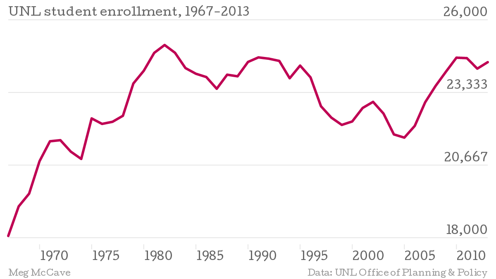

The enrollment chart below indicates that this goal is slightly unrealistic, but the UNL Student Veteran's Organization is optimistic and would like to propose building a Military and Veterans Center as one solution to this daunting task.
Data:
| Year | Number of Students |
|---|---|
| 1967 | 18067 |
| 1968 | 19150 |
| 1969 | 19618 |
| 1970 | 20810 |
| 1971 | 21541 |
| 1972 | 21581 |
| 1973 | 21160 |
| 1974 | 20892 |
| 1975 | 22380 |
| 1976 | 22179 |
| 1977 | 22256 |
| 1978 | 22477 |
| 1979 | 23661 |
| 1980 | 24128 |
| 1981 | 24786 |
| 1982 | 25075 |
| 1983 | 24789 |
| 1984 | 24228 |
| 1985 | 24020 |
| 1986 | 23899 |
| 1987 | 23469 |
| 1988 | 23985 |
| 1989 | 23926 |
| 1990 | 24453 |
| 1991 | 24620 |
| 1992 | 24573 |
| 1993 | 24491 |
| 1994 | 23854 |
| 1995 | 24320 |
| 1996 | 23887 |
| 1997 | 22827 |
| 1998 | 22408 |
| 1999 | 22142 |
| 2000 | 22268 |
| 2001 | 22764 |
| 2002 | 22988 |
| 2003 | 22559 |
| 2004 | 21792 |
| 2005 | 21675 |
| 2006 | 22106 |
| 2007 | 22973 |
| 2008 | 23573 |
| 2009 | 24100 |
| 2010 | 24610 |
| 2011 | 24593 |
| 2012 | 24207 |
| 2013 | 24445 |
Veterans may want a dedicated space on campus to call their own, in which to find community, resources, or use as an escape from the hustle and bustle of campus. The center could feature computer labs, academic services, special events, meeting spaces and customized web-based services for veterans.
Including veterans in your student population is certainly the right thing to do, but just as our returning veterans gain value from their higher education experience, your institution stands to benefit from their participation, as well. As with other adult learners who bring real world “work” experience to the campus and classroom, student veterans bring with them an unmatched real “world” experience. But they also bring a new level of diversity, unprecedented leadership, and untapped levels of motivation. When the appropriate programs and services are provided, many institutions find their student veteran population outshines their general population in GPA, retention, and graduation rates. The G.I. Bill saves colleges money in the form of financial aid for these students, money that would otherwise have been spent on aid for them.
The average amount of financial aid received by nonmilitary nontraditional undergraduates at public four-year colleges is $8,100. Compared to the average amount of financial aid received by nonmilitary traditional undergraduates at public four-year colleges is $9,900.